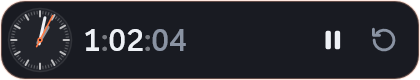
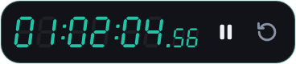
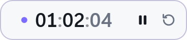

늘 보이는 자리에 작게 붙여 두는 Windows 스톱워치 위젯.
설치 없이 파일 하나만 받아서 실행하면 끝이에요.
Windows용 프로그램이라 휴대폰에서는 실행할 수 없어요.
링크를 복사하거나 나에게 보내 두고 PC에서 받아 주세요.
설치 과정이 없어요. 압축도 풀 필요 없어요.
위 버튼을 누르면 TaskbarStopwatch.exe 파일 하나가 받아져요. 바탕화면이나 원하는 폴더에 옮겨 두세요.
파란 경고 창이 뜨면 추가 정보 → 실행을 눌러 주세요. 아래 그림을 참고하세요.
오른쪽 시계 옆에 위젯이 나타나요. ▶ 를 누르면 시작, 우클릭하면 설정이에요.
개인이 만든 프로그램이라 Windows가 처음 보는 파일로 인식해서 뜨는 안내예요.
① 글자 추가 정보를 눌러요
② 생긴 실행 버튼을 눌러요
처음 한 번만 하면 돼요. 코드가 전부 공개되어 있어서 GitHub에서 누구나 확인할 수 있어요.
다크·라이트, 포인트 색, 배경 투명도, 크기까지 바꿀 수 있어요.

아날로그
LCD
라이트PC를 잠그거나 절전하면 자동으로 멈추고, 돌아오면 이어서 재요.
시간을 더블클릭해서 +15, 1:30:00처럼 바로 고칠 수 있어요.
전체 화면 앱을 쓰는 동안은 알아서 사라졌다가 다시 나타나요.
위젯을 눌러도 작업하던 창은 그대로 활성 상태예요.
메모리 약 5MB. 켜 둔 걸 잊을 만큼 조용해요.
종료할 때 시간을 저장해 두고, 다음에 켜면 그대로 이어져요.
네, 완전히 무료이고 광고도 없어요. MIT 라이선스의 오픈소스예요.
아니요, Windows 10·11 전용이에요.
브라우저가 "흔히 다운로드되지 않는 파일"이라며 막을 수 있어요. 다운로드 목록에서 파일 옆 … 메뉴 → 유지를 누르면 돼요. 그래도 안 되면 릴리스 페이지에서 zip 파일로 받을 수도 있어요.
위젯을 우클릭 → 설정… → Windows 시작 시 실행을 켜 주세요.
우클릭 → 종료한 뒤 exe 파일을 지우면 끝이에요. 설정까지 지우려면 %APPDATA%\TaskbarStopwatch 폴더도 지워 주세요. (시작 시 실행을 켜 두었다면 먼저 꺼 주세요.)
릴리스 페이지에 있는 .sha256 값과 PowerShell의 Get-FileHash TaskbarStopwatch.exe 결과를 비교해 보세요. 소스에서 직접 빌드할 수도 있어요.